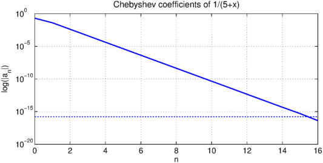

1. Introduction
In this example, we shall compare the results of the Chebfun construction process to a known closed-form formula for the Chebyshev expansion coefficients of a function with a pole.
This gives us an excellent excuse to visit some interesting approximation theory from the 1960s!
2. The residue method of Elliott
For certain functions, explicit formulas for the coefficients in the Chebsyhev series expansion may be obtained using a contour integral technique described by Elliott [1]. Here is how it works:
The Chebsyhev coefficients of a Lipschitz-continuous function $f$ can be determined by the integral $$ a_n = \frac{2}{\pi} \int_{-1}^{1} \frac{f(x)T_n(x)}{\sqrt{1-x^2}} {\rm d} x.$$
If $f(x)$ is analytic within a particular contour $C$ in the complex plane, then by Cauchy's integral formula, we can also write $$ f(x) = \frac{1}{2 \pi i} \int_{C} \frac{f(z)}{z-x} {\rm d} z. $$
If $C$ is large enough to enclose the unit interval, then the second of these two formulas can be substituted into the first and the orders of integration interchanged to give $$ a_n = \frac{1}{\pi^2 i} \int_C f(z) \int_{-1}^{1} \frac{T_n(x) {\rm d} x}{(z-x)\sqrt{1-x^2}} {\rm d} z. $$
The integral with respect to $x$ can be computed exactly so that we end up with $$a_n = \frac{1}{\pi i} \int_{C} \frac{f(z)}{\sqrt{z^2-1}(z \pm \sqrt{z^2-1})^n} {\rm d} z. $$
Here, we note that $\rho = |z \pm \sqrt{z^2-1}|$ is the parameter of the usual Bernstein Ellipse $E_\rho$ with the point $z = x + iy$ on its boundary.
So, if $f$ is a function with a pole at $z_0$ whose integral around $E_\rho$ tends to zero as $\rho \to \infty$, then by the residue theorem we have $$ a_n = \frac{-2r_0}{\sqrt{z_0^2-1}(z_0 \pm \sqrt{z_0^2-1})^n}, $$ where $r_0$ is the residue of the pole at $z_0$.
3. A function with pole
As an example, consider the function $$ f(x) = \frac{1}{5 + x} . $$
This function can be represented in Chebfun by an interpolant in 17 points.
f = @(x) 1./(5+x); fc = chebfun(f); k = 1:length(fc);
The function has a pole at $-5$ with residue $1$. Substituting these values into the above formula then gives the following exact expression for the Chebyshev expansion coefficients: $$ a_n = \frac{1}{\sqrt{6}} \frac{(-1)^n}{(5+\sqrt{24})^n} $$
The theoretical coefficients match those computed by Chebfun, apart from floating point representation and aliasing effects. The $a_0$ coefficient is out by the usual factor of $2$.
exact_coeffs = flipud( (1/sqrt(6)*(-1).^(k-1)./(5+sqrt(24)).^(k-1))' );
cheb_coeffs = chebpoly(fc)';
display([exact_coeffs cheb_coeffs exact_coeffs-cheb_coeffs])
FS = 'fontsize'; fs = 14;
chebpolyplot(fc,'linewidth',1.6)
title('Chebyshev coefficients of 1/(5+x)',FS,fs)
xlabel('n'), ylabel('log(|a_n|)'), grid on
ans = 0.000000000000000 0.000000000000000 0.000000000000000 -0.000000000000000 -0.000000000000001 0.000000000000000 0.000000000000005 0.000000000000005 0.000000000000000 -0.000000000000047 -0.000000000000047 0.000000000000000 0.000000000000461 0.000000000000461 0.000000000000000 -0.000000000004565 -0.000000000004565 0.000000000000000 0.000000000045188 0.000000000045188 -0.000000000000000 -0.000000000447312 -0.000000000447312 -0.000000000000000 0.000000004427932 0.000000004427932 -0.000000000000000 -0.000000043832012 -0.000000043832012 0.000000000000000 0.000000433892186 0.000000433892186 0.000000000000000 -0.000004295089853 -0.000004295089853 -0.000000000000000 0.000042517006342 0.000042517006342 -0.000000000000000 -0.000420874973563 -0.000420874973563 0.000000000000000 0.004166232729288 0.004166232729288 -0.000000000000000 -0.041241452319315 -0.041241452319315 0.000000000000000 0.408248290463863 0.204124145231932 0.204124145231932

References
- D. Elliott, The evaluation and estimation of the coefficients in the Chebyshev series expansion of a function, Mathematics of Computation, 18 (1964), 274-284.